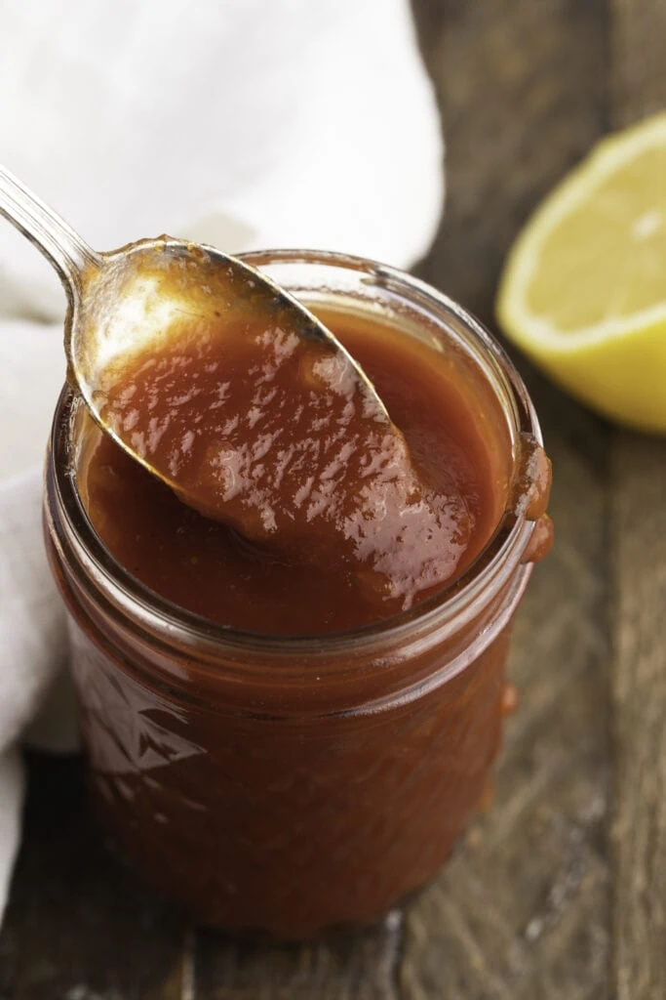

Heinz Chili Sauce

Description
With this homemade Heinz chili sauce recipe, you’ll never have to buy the expensive bottle again.
With its wonderful combination of sweet, savory, tangy, and spicy flavors, the Heinz chili sauce tastes better than ketchup.
Ingredients
- 1 cup tomato puree
- 1/3 cup light corn syrup
- 1/4 cup white vinegar
- 2 teaspoons dried onino flakes
- 2 teaspoons granulated sugar
- 1 teaspoon salt
- 1 teaspoon lemon juice
- 1/8 teaspoon garlic powder
Steps
- In a small saucepan over medium heat, whisk together the tomato puree, corn syrup, vinegar, onion flakes, sugar, salt, lemon juice, and garlic powder.
- Once it starts to bubble, lower the temperature to low and let the mixture simmer for 30 minutes. Allow the chili sauce to cool completely. Enjoy!